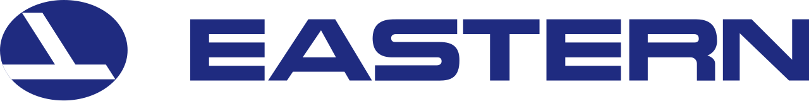
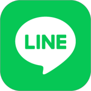
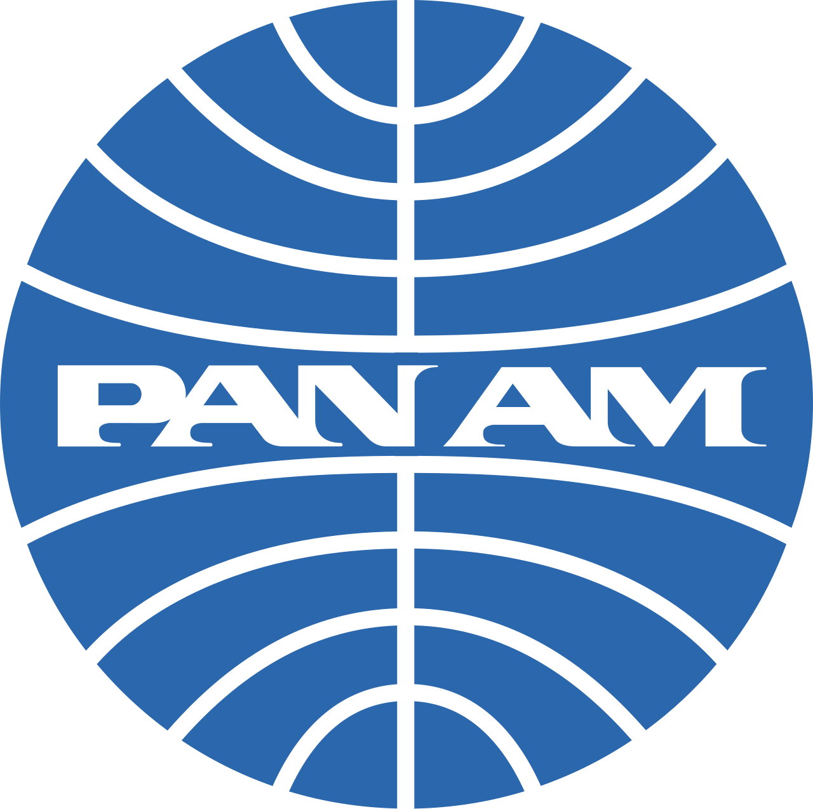
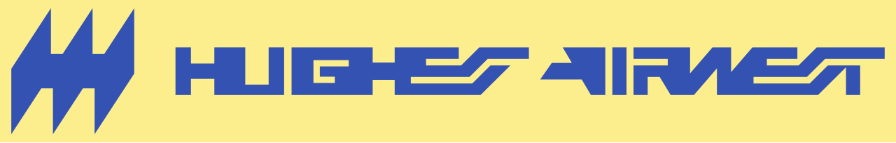

홈 > 브랜드 매거진 > Eastern Airlines
Eastern Airlines
이스턴 항공(Eastern Air Lines)은 1991년까지 운항한 미국의 항공사다. 1960년대 초 잦은 사고와 서비스 악평, 막대한 적자에 직면하자 신임 사장 플로이드 홀이 이미지 회복을 위해 코퍼레이트 아이덴티티 전문 회사 리핀콧 앤 마굴리스(Lippincott & Margulies)에 의뢰했고, 1964년 디자인해 1965년 함대 전반에 전개했다.
산업 분야 기술·전자 · 공개 등급 편집 검수 · 브랜드 평가 4 ★

한눈에 보는 브랜드
이스턴 항공(Eastern Air Lines)은 1991년까지 운항한 미국의 항공사다. 1960년대 초 잦은 사고와 서비스 악평, 막대한 적자에 직면하자 신임 사장 플로이드 홀이 이미지 회복을 위해 코퍼레이트 아이덴티티 전문 회사 리핀콧 앤 마굴리스(Lippincott & Margulies)에 의뢰했고, 1964년 디자인해 1965년 함대 전반에 전개했다.
브랜드 관점
이스턴 항공의 1964~1965년 작업은 항공사 디자인 아카이브에서 1960년대 코퍼레이트 아이덴티티의 전형으로 꼽힌다. 핵심은 로고 하나가 아니라 항공기 도장부터 승무원 유니폼, 항공권, 기내 메뉴, 수하물 태그, 지상 시설 사인까지 전 접점을 하나의 시스템으로 통일했다는 점이다.
신임 사장 플로이드 홀이 1964년 2월 크라이슬러·US 스틸 작업으로 알려진 리핀콧 앤 마굴리스를 선임했고, 시장 조사를 거쳐 기존의 매(falcon) 심볼을 추상화한 새 마크를 만들었다. 두 개의 직선을 결합해 매이자 항공기를 연상시킨 형태였다.
동체를 따라 이어지다 꼬리에서 위로 솟구치는 두 색조의 파란 줄무늬 도장은 그 모양 때문에 직원들 사이에서 '하키 스틱(hockey stick)'으로 불렸고, 이 별칭은 1991년 운항 종료까지 따라다녔다. 흔히 함께 거론되는 'The Wings of Man'은 도장 명칭이 아니라 1969년 광고 대행사 영 앤 루비캄이 만든 라이프스타일 캠페인 슬로건으로, 비행을 인간의 성취·동경과 연결한 별개의 광고 자산이다.
1964년 10월 25일 시간표 표지에서 새 마크가 처음 공개됐고 1965년 중반까지 함대 전체가 재도장됐으며, 이 시스템은 거의 변하지 않고 약 26년간 유지됐다.
시작과 성장
이스턴 항공의 기원은 1926년 우편 항공으로 거슬러 올라간다. 1926년 해럴드 핏케언이 세운 핏케언 항공(Pitcairn Aviation)이 미 동부 노선의 항공우편 사업으로 출발했고, 1929년 클레먼트 키스가 인수한 뒤 1930년 이스턴 에어 트랜스포트로 이름을 바꿨다.
이후 제너럴 모터스 산하를 거쳐 1934년 항공우편법 이후 이스턴 에어 라인스가 됐다. 1938년 1차 대전 격추왕이자 자동차 경주 선수 출신인 에디 리켄배커가 제너럴 모터스로부터 회사를 사들여 사장 겸 총지배인을 맡았고, 1959년 물러날 때까지 군소 노선 사업자를 미국 주요 항공사로 키웠다.
디자인 측면의 전환점은 1960년대 초다. 잦은 사고와 서비스 악평, 막대한 적자에 직면한 회사는 1963년 말 취임한 플로이드 홀이 이미지 회복을 위해 코퍼레이트 디자인 전문 회사 리핀콧 앤 마굴리스에 의뢰하면서 1964년 새 아이덴티티를 디자인하고 1965년 함대 전반에 전개했다.
이는 1960년대 미국 대기업이 코퍼레이트 디자인을 경영 회복 수단으로 도입한 흐름과 맞닿아 있다.
브랜드 아이덴티티
리핀콧 앤 마굴리스는 이스턴의 기존 상징인 매를 추상화해, 두 개의 직선을 결합한 매이자 항공기를 연상시키는 실루엣으로 다듬었다. 동체를 따라 이어지는 두 색조의 파란 줄이 꼬리에서 각도를 틀어 위로 솟구치는 도장은 그 형태 때문에 '하키 스틱(hockey stick)'으로 불렸다.
두 파랑의 공식 명칭은 위가 '캐리비안 블루', 아래가 '아이오노스피어 블루'다. 이 도장은 거의 변하지 않고 1991년 운항 종료까지 약 26년간 쓰여 이스턴의 최장수 도장이 됐다.
참고로 자주 함께 거론되는 'Wings of Man'은 이 도장의 이름이 아니라 1960년대 후반 광고 대행사 영 앤 루비캄의 광고 슬로건이다.
제품과 서비스
이스턴은 노선·운항 방식에서도 족적을 남겼다. 1961년 뉴욕·워싱턴 D.C.·보스턴을 잇는 시간당 운항 '이스턴 에어 셔틀'을 도입해, 예약 없이 탑승해도 좌석을 보장하는 무예약 셔틀 운항을 개척했다.
1965년 전개된 하키 스틱 도장과 '캐리비안 블루(상단)·아이오노스피어 블루(하단)'의 2색 블루 시스템은 항공기뿐 아니라 유니폼·항공권·기내 메뉴 등 응용물 전반에 적용된 아카이브 대상이다.
사람들
현재 상태
이스턴은 1985년 프랭크 로렌조의 텍사스 에어에 인수됐고, 자산이 콘티넨털 등 계열사로 옮겨졌다. 노사 분쟁과 1989년 대규모 파업, 누적 부채를 견디지 못해 1991년 1월 19일 운항을 중단하고 청산됐다.
회사는 사라졌지만 1965년 도장과 하키 스틱 마크는 항공 디자인 아카이브에 1960년대 코퍼레이트 아이덴티티 사례로 남아 있다.
타임라인
BI/CI 변천사
함께 읽을 브랜드

기술·전자 · 자료 기반라인라인(LINE)은 2011년 네이버 일본법인이 출시한 모바일 메신저로, 일본·대만·태국 등에서 국민 메신저로 자리 잡았다. 현재 운영사는 LY Corporation이...
기술·전자 · 편집 검수British RailBritish Rail는 1969년에 기록된 Historical 계열의 브랜드 아이덴티티 사례입니다. Design Research Unit, Gerald Barney...
Eq
Equator
기술·전자 · 편집 검수EquatorEquator는 2025년에 기록된 Technology 계열의 브랜드 아이덴티티 사례입니다. For The People가 아이덴티티 작업의 디자이너로 기록되어 있습니...

기술·전자 · 편집 검수Pan Am팬암(Pan American World Airways)은 1927년부터 1991년까지 운항한 미국의 항공사로, 한때 미국의 비공식 국적기로 불리며 20세기 항공 디자...
 기술·전자 · 편집 검수Swissair
기술·전자 · 편집 검수SwissairSwissair는 1978년에 기록된 Airlines 계열의 브랜드 아이덴티티 사례입니다. Karl Gerstner가 아이덴티티 작업의 디자이너로 기록되어 있습니다....
 기술·전자 · 편집 검수Austrian Airlines
기술·전자 · 편집 검수Austrian AirlinesAustrian Airlines는 1969년에 기록된 Airlines 계열의 브랜드 아이덴티티 사례입니다. Josef Oberauer가 아이덴티티 작업의 디자이너로...

기술·전자 · 편집 검수Hughes AirwestHughes Airwest는 1972년에 기록된 Airlines 계열의 브랜드 아이덴티티 사례입니다. Mario Zamparelli가 아이덴티티 작업의 디자이너로 기...
 기술·전자 · 편집 검수Mozilla
기술·전자 · 편집 검수MozillaMozilla는 2024년에 기록된 Technology 계열의 브랜드 아이덴티티 사례입니다. jkr가 아이덴티티 작업의 디자이너로 기록되어 있습니다. 공개 섹션 정보...